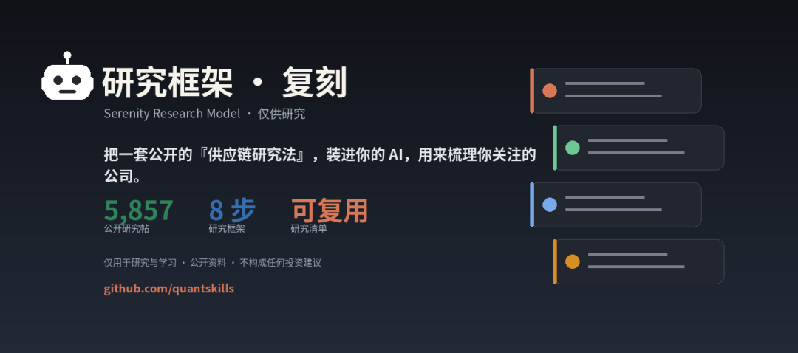
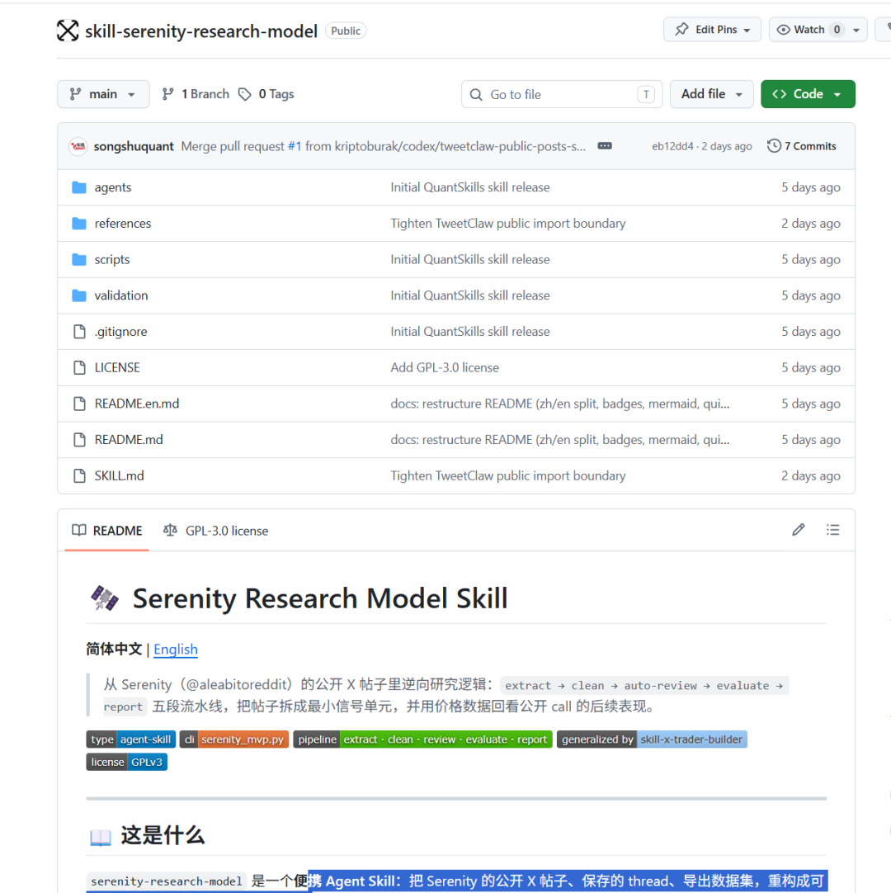
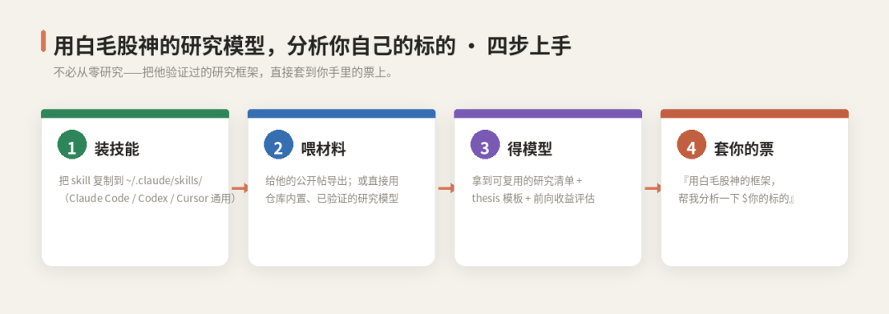
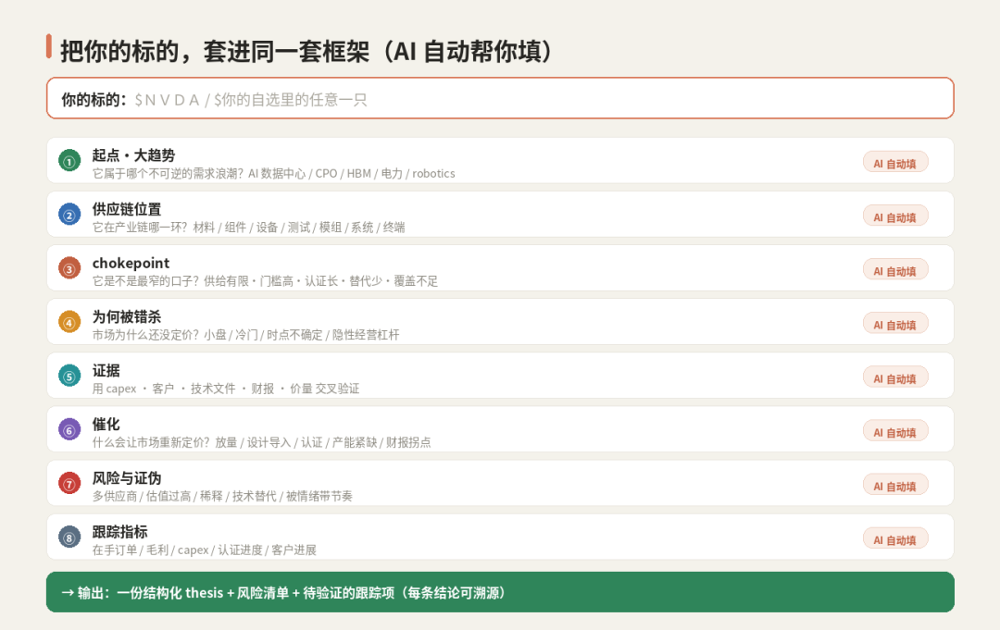
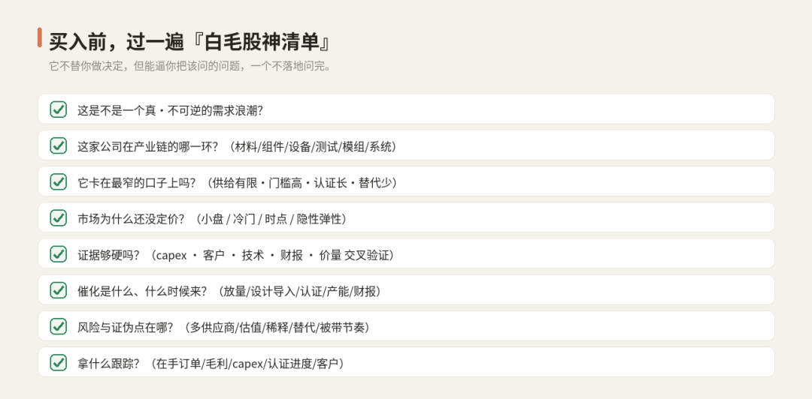
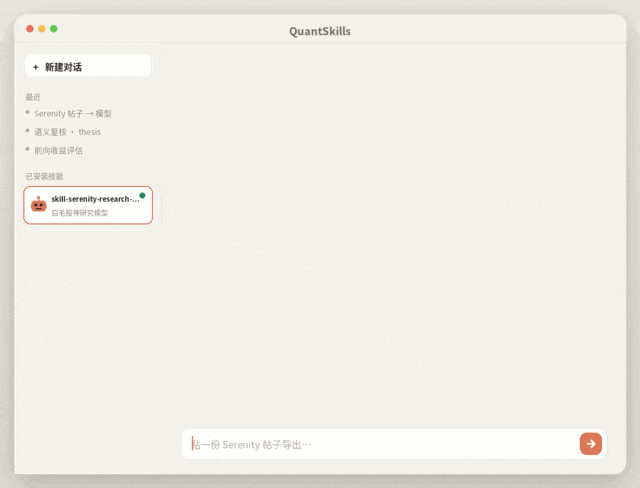
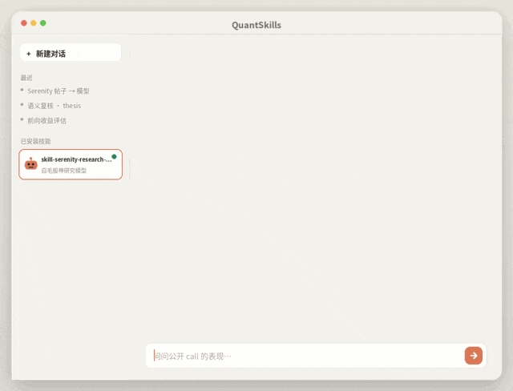

QUANTSKILLS · 上手指南 ｜ 基于公开数据集 yan-labs/serenity-aleabitoreddit ｜ 仅供研究，不构成投资建议.⚠️ 重要：本 Skill 仅对公开资料做研究方法层面的归纳，不代表 Serenity 本人；它帮你把问题问全，但研究决策永远是你自己的判断。

这个 Skill 做的是"从需求浪潮往上游拆，找到最窄供给口"的研究框架，把这套框架提炼成你能直接调用的 AI 能力。装上它，你的 AI 就能用同一套方法论，分析你自选里的任意标的。
先认识一下 Serenity：他不是"预言家"，是"拆链条的人"
Serenity 在网络上被大量关注，核心原因是他研究 AI 产业链的方式非常独特：
• 他不看 K 线猜涨跌，而是顺着技术需求往上游拆——比如 AI 算力爆发，先拆到光互联，再拆到 CPO 封装，再拆到谁能做高端基板。 • 他找的不是"最热的公司"，而是**"最窄的供给口"**——也就是产业链里"缺了它，下游就转不动"的那个环节。 • 他的帖子很少给"买不买"的结论，而是给**"为什么这个环节会被卡脖子"**的推理链。
换句话说：他输出的不是交易信号，而是研究结构。你跟着学，该学的不是"他买了什么"，而是**"他怎么把一条产业链拆到不能再拆"**。
四步上手：安装运行

第 0 步：装上 Skill
cp -r skill-serenity-research-model ~/.claude/skills/serenity-research-model
# Claude Code / Codex / Cursor 都能用它自带一份已经跑通、验证过的研究模型（在仓库 validation/ 里）——所以你不必先去收集他几千条帖子，可以直接进入下一步，用现成的框架分析你的标的。
核心用法：把你的标的，套进同一套框架
不必从零研究——把他验证过的框架，直接套到你手里的标的上。

装好之后，你只要对 AI 说一句话，它就会按这套 8 步框架，把你的标的从头到尾过一遍。比如：
用 Serenity 的框架帮我分析 $NVDA：
先定位它在 AI 供应链的哪一环，
再判断是不是 chokepoint（最窄供给口），
列出证据（capex/客户/技术/财报/价量）、催化和风险，
最后给我一组要持续跟踪的指标。它不会只甩给你一句"看好/看空"，而是产出一份结构化的 thesis：起点大趋势 → 供应链位置 → 是不是卡点 → 市场为何错判 → 证据 → 催化 → 风险与证伪 → 跟踪指标。每一条，都是你做出研究决策前真正该想清楚的。
几个你可以直接抄的提问
① 把我自选里这几个 $A $B $C，按 Serenity 的 chokepoint 清单各过一遍，
哪个最像"最窄的供给口"？为什么？
② 我有一段关于 $XXXX 的研报，用他的证据体系帮我看看：
证据够不够硬？有没有只是"也受益"而不是真卡点？
③ 顺着 CPO / HBM 这个需求浪潮往上游拆，
按他的方法，帮我找几个机构覆盖不足的环节。研究决策前，过一遍这张清单
它不替你做决定，但能逼你把该问的问题，一个不落地问完。

（Serenity 研究决策前清单：需求/供应链/卡点/错判/证据/催化/风险/跟踪）
这张清单，就是他高质量 thesis 的"骨架"——Skill 从他 2,652 条被判定为高质量主动 thesis 的帖子里反推而来。你不需要记住它，AI 会替你逐项追问；你要做的，是对每一项给出诚实的回答。
关于框架
它不是凭空捏的，而是从 Serenity 5,857 条公开帖、15,929 条信号里分析出来的——而且他用公开讨论提及过的标的，做了事后价格回测验证。

（注意力地图）
↑ 真实产物：他的注意力高度集中在 AI 基建与光互联（Photonics/CPO），高频标的多是上游卡点公司
公开信号表现出一定的方向一致性——事后回测可见，这套框架"言之有据"。

（公开提及后的价格跟随曲线）
↑ 8,152 条公开帖信号的价格跟随曲线（短期窗口内呈现方向一致性，中长期随市场回归）。公开帖信号≠交易时机，仅说明这套框架具有可验证的研究价值
也就是说：你套用的，是一套有真实研究痕迹、且经得起事后检验的框架——而不是又一个"看我多准"的展示号。
完整Skill包已经发到群里：
本文配图：上手步骤 / 框架工作表 / 研究清单为说明性图示；注意力地图与价格跟随曲线来自仓库基于公开数据集 yan-labs/serenity-aleabitoreddit 的真实运行产物。本 Skill 仅对公开材料做研究方法层面的分析与归纳，提供研究框架而非投资建议，不代表 Serenity 本人，不验证任何私人收益声明，公开帖信号不等于交易时机。